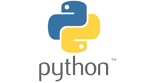

Linguagens de programação para Back-end
O que é programação back-end?
Diferente da linguagem front-end, mas complementar,
a linguagem back-end é a que fica ‘por trás’ de uma
aplicação web, ou seja, são os códigos que compõe os
bastidores de uma página sendo o caminho que conecta o
navegador do banco de dados existente, além de gerenciar
a conexão com os usuários e alimentar um site.
Veja algumas linguagens de programação back-end logo abaixo:
PHP
Quando falamos de servidor é uma das primeiras que vêm à cabeça.
Caracterizada por ser multifuncional e fácil de usar, pois seu
código é aberto e versátil, além de quase todos os sistemas
operacionais oferecem suporte a PHP.
Ademais, é capaz de suportar o processamento de um grande volume de dados.

C#
É mais utilizada na construção de jogos e aplicativos Windows para celulares.
Ela tem um propósito mais geral, com sintaxe simples e de fácil aprendizagem.
Uma característica é trabalhar com base em códigos compartilhados e ser conhecida
por executar o código de uma maneira mais ágil quando comparada às outras linguagens.

JavaScript
A Javascript é uma linguagem de programação dinâmica cheia de recursos
que quando aplicada em um documento HTML, pode fornecer interatividade
dinâmica em sites.
Lembre-se que quase todas as páginas da internet tem um código em javascript.

Python
Considerada umas das linguagens de programação que mais estão em alta,
a Python é uma ótima linguagem para quem está iniciando o estudo em
programação. Afinal, como tem o código aberto possibilita trabalhar de
uma maneira muito mais otimizada, integrada e eficaz. A Phyton é muito
utilizada para o desenvolvimento web e machine learning

Java
Considerada uma das linguagens mais consagradas e populares do mundo,
Java é orientada a objetos, roda em várias plataformas e serve para
desenvolver aplicações web e mobile. Diferente do que ocorre em outras
linguagens de programação, as aplicações criadas em Java não são compiladas
em um código nativo. Além disso, algumas das suas principais características
são alta performance dos programas, portabilidade, segurança e simplicidade.

Conclusão
Dentre todas as linguagens apresentadas não há como definir qual é definitivamente a melhor,
pois mesmo elas sendo para back-end, ainda possuem diferentes focos, como PHP que é para
desenvolvimento web e C# para aplicativos.
Referências